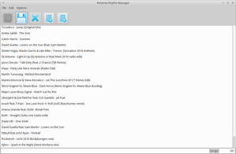

RelPM
Dieser Artikel wurde für die folgenden Ubuntu-Versionen getestet:
Ubuntu 16.04 Xenial Xerus
Ubuntu 14.04 Trusty Tahr
Zum Verständnis dieses Artikels sind folgende Seiten hilfreich:
RelPM  ist ein Editor für Wiedergabelisten, der dafür programmiert wurde, Wiedergabelisten mit relativen Pfaden zu erzeugen. Das Programm sollte ursprünglich "Relative Playlist Manager" heißen und nur mit RelPM abgekürzt werden. Mittlerweile findet man die alte Bezeichnung allerdings kaum mehr.
ist ein Editor für Wiedergabelisten, der dafür programmiert wurde, Wiedergabelisten mit relativen Pfaden zu erzeugen. Das Programm sollte ursprünglich "Relative Playlist Manager" heißen und nur mit RelPM abgekürzt werden. Mittlerweile findet man die alte Bezeichnung allerdings kaum mehr.
Wiedergabelisten mit relativen Pfaden haben den Vorteil, dass sie zusammen mit den Titeln, auf die verwiesen wird, von einem Gerät zum Nächsten kopiert werden können. Ein Anwendungsfall wäre eine Musiksammlung, die auf einem PC liegt. Man erstellt dort eine Wiedergabeliste mit zusammenpassenden Liedern. Diese Arbeit will man natürlich nicht am Smartphone wiederholen müssen, weil das Programm, mit der die Wiedergabeliste erstellt wurde, absolute Pfade in die Datei geschrieben hat.
Für Hintergrundinformationen zum Thema "absolute und relative Pfade" gibt es den ausführlichen Artikel Pfadname in der deutschen Wikipedia. Momentan ist nur das Öffnen von .m3u-Wiedergabelisten möglich (Stand: 12/2014). Andere Typen könnten bei Bedarf allerdings leicht vom Entwickler nachgerüstet werden.
Voraussetzungen¶
Das Programm benötigt Java. Die Installation einer Laufzeit-Umgebung (JRE) in der Version 7 oder 8 ist zwingende Voraussetzung zur Nutzung des Programms.
Installation¶
 RelPM kann nicht direkt aus den offiziellen Paketquellen installiert werden, sondern liegt nur als Fremdpaket
RelPM kann nicht direkt aus den offiziellen Paketquellen installiert werden, sondern liegt nur als Fremdpaket  vor. Nach dem Herunterladen müssen DEB-Pakete noch manuell installiert werden [1].
vor. Nach dem Herunterladen müssen DEB-Pakete noch manuell installiert werden [1].
Hinweis!
Fremdpakete können das System gefährden.
Bedienung¶
Das englischsprachige Programm kann nach der Installation bei Ubuntu-Varianten mit einem Anwendungsmenü über "Multimedia -> RelPM" gestartet werden [2]. Ansonsten verwendet man den Befehl relpm.

Nach dem Öffnen des Programms kann man eine Wiedergabeliste entweder über das Menü oder durch simples Hineinziehen der Datei in das leere Fenster laden. Um Zeit zu sparen, wird das Programm standardmäßig versuchen, die Tags der einzelnen Titel aus der Wiedergabeliste zu laden, anstatt jeden Titel extra zu öffnen. Ist dieses Verhalten nicht erwünscht, kann man diese Funktion unter "Settings" deaktivieren. Dann wird das Programm die Tags aus den Titeln direkt lesen.
Ist die Wiedergabeliste erst mal fertig geladen, kann man Titel markieren und per Drag & Drop verschieben. Will man Titel hinzufügen, funktioniert das entweder wieder über das Menü, oder durch erneutes Hineinziehen der Datei(en) in die Wiedergabeliste.
Wenn man gerne mit der Tastatur navigiert, kann man auch durch simples Tippen des Titelnamens an den richtigen Punkt in der Liste springen oder mit der Taste Entf markierte Titel aus der Liste entfernen.
Beim Speichern generiert das Programm zusätzlich eine Wiedergabeliste mit den letzten 100 Titeln. Diese Funktion ist hilfreich, wenn man zum Beispiel eine große Wiedergabeliste mit all seinen Lieblingstiteln hat, zu der dauernd neue hinzugefügt werden. Die zusätzlich erzeugte Wiedergabeliste enthält dann nur die neueren Titel. Sollte dieses Verhalten nicht gewünscht sein, kann man es unter "Settings" deaktivieren.
 Übersichtsartikel
Übersichtsartikel- Erstellt mit Inyoka
-
 2004 – 2017 ubuntuusers.de • Einige Rechte vorbehalten
2004 – 2017 ubuntuusers.de • Einige Rechte vorbehalten
Lizenz • Kontakt • Datenschutz • Impressum • Serverstatus -
Serverhousing gespendet von